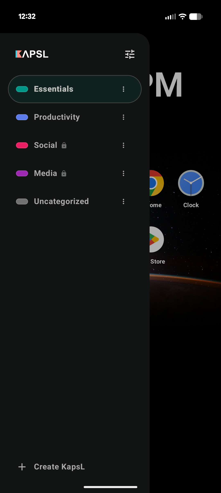

Focus Capsules
Create KapsLs for different modes of life. When one is active, the drawer only exposes approved apps.
Android home screen for intentional attention
A minimalist, distraction-blocking Android launcher that lets you group apps into focus capsules, keep noise out, and make your phone match what you meant to do.

Why it exists
KapsL replaces the noisy, everything-at-once app drawer with smaller focus capsules. Each capsule contains only the apps that belong to that moment, such as Work, Fitness, Reading, Utilities, or Unwind.
Features
Create KapsLs for different modes of life. When one is active, the drawer only exposes approved apps.
Alerts from apps outside the active capsule are intercepted and silently dismissed, while system essentials stay allowed.
Protect capsules with a 4-8 digit PIN, or lock them only during selected days and time windows.
Give each capsule its own color and wallpaper to create a visual cue for the current context.
When a new app is installed, KapsL can prompt you to place it into the right capsules immediately.
How it works
KapsL works as your Android home launcher. You choose which apps belong in each capsule, activate the right one, then use gestures to move between the home screen, capsule drawer, and settings.
This lets KapsL become the screen you return to when pressing Home.
Pick a name, type, color, wallpaper, PIN, schedule, and the apps that belong inside.
Swipe up to reveal the active capsule drawer. Apps outside the capsule stay out of reach.
With notification access enabled, KapsL filters alerts from apps that are not part of the active capsule.
Download
KapsL is distributed only as an official Android app. The Play Store listing is the recommended way to install and receive updates.
Download from the Play Store to keep installation, permissions, and updates handled through Android's standard app flow.
Open Play Store listing